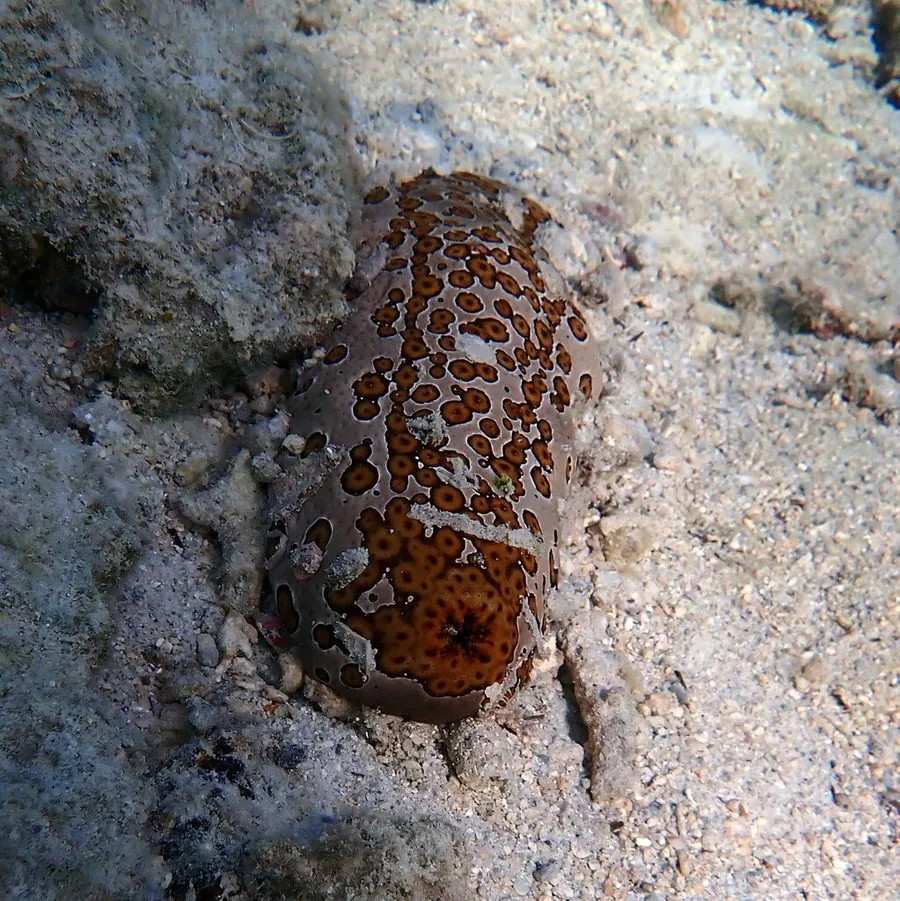

其他无脊椎动物 · 动物界
图纹白尼参 Bohadschia argus

体表布满黑褐色圆斑、形似豹纹的大型海参，受惊时会从肛门喷出黏性极强的居维氏管，是印度洋—太平洋珊瑚礁沙坪的常见种。
- 分类
- 门棘皮动物门纲海参纲目楯手目科海参科属白尼参属
- 栖息环境
- 热带珊瑚礁沙坪、潟湖与海草床的沙质海底
- 地理分布
- 印度洋—太平洋热带海域，中国南海与西沙群岛
- 保护级别
- 暂无评估
物种志
图纹白尼参体长通常25–50厘米，身体呈粗大的圆筒形，体壁厚而柔软，底色为黄褐或灰褐色，背面均匀分布着许多黑褐色圆斑，斑块中央常有一点浅色，看上去像豹子身上的斑点，因此又名豹纹海参。腹面颜色较浅，密布细小的管足，口周围的触手呈楯状，用于铲取沙粒。
它白天多在沙底缓慢爬行，吞食表层沙子，消化其中的有机碎屑、细菌和微小生物，夜间活动更活跃。遇到危险时，它会从肛门喷出白色的居维氏管，这些细管遇水迅速膨胀，黏性极强并含有皂苷，能缠住捕食者，事后可以再生。图纹白尼参生活在印度洋—太平洋的珊瑚礁沙坪、潟湖和海草床，中国南海和西沙群岛有分布。它可食用，但部分个体皂苷含量较高，加工不当会引起中毒；采集时还要当心喷出的黏管刺激皮肤和眼睛。
形态与习性
- 食性吞食珊瑚沙，消化有机碎屑、细菌与微小生物
- 体长通常25–50厘米，体壁厚而柔软
- 斑纹黄褐底色上布满黑褐色圆斑，形似豹纹
- 防御受惊时从肛门喷出黏性居维氏管，含皂苷
- 再生喷出的居维氏管事后可再生
- 食用提示可食用，但皂苷含量较高，加工不当会中毒
趣味知识
- 受惊时它会喷出一团白色细管，遇水膨胀后黏性极强。
- 背上的黑褐色圆斑是它得名豹纹海参的原因。
- 居维氏管喷出后还能重新长出来，是它重要的防身手段。